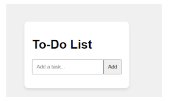
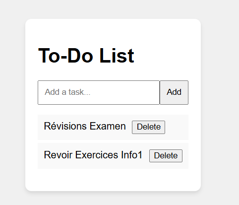

Présentation du projet
Ce projet est une application de To-Do List moderne développée en HTML, CSS et JavaScript. Elle permet d’ajouter, supprimer, filtrer et marquer des tâches comme terminées tout en restant entièrement responsive.

Objectifs pédagogiques
- Mettre en pratique la manipulation du DOM en JavaScript
- Créer une interface utilisateur responsive et accessible
- Utiliser Flexbox et Grid pour la mise en page
- Implémenter des transitions et animations CSS
- Gérer un système de filtres dynamiques
Technologies utilisées
HTML5
CSS3
JavaScript
Galerie du projet



Conclusion
Cette application m’a permis de renforcer mes compétences en JavaScript et d’améliorer ma compréhension du responsive design.
Retour aux projets